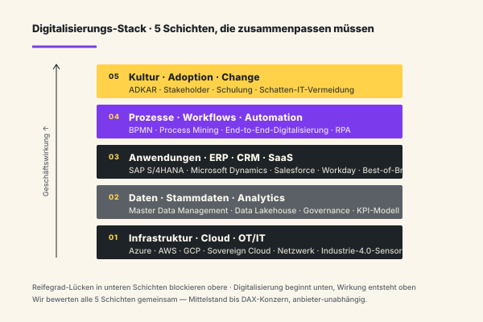
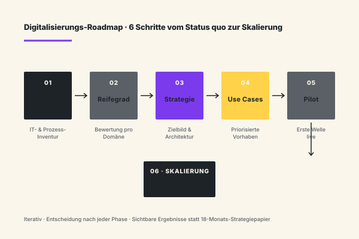
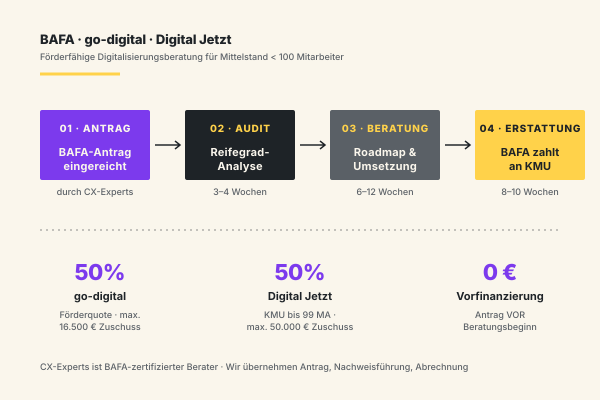

Digitalisierung sauber › vorbereiten.
Wir bringen Ordnung in Digitalisierungs- und Transformationsvorhaben — Zielbild, Maßnahmen und Reihenfolge geordnet, bevor die Komplexität davonläuft. Digitalisierungsberatung, digitale Transformation und Industrie-4.0-Projekte für den deutschen Mittelstand und DAX-Konzerne.
Digitalisierung scheitert selten an Technologie. Sie scheitert an Reihenfolge.
Die Probleme sind wiederkehrend: zu viele parallele Initiativen, kein gemeinsames Zielbild, fehlende Verbindung zur Prozess- und Daten-Realität, unklare Verantwortung. Wir kennen die Muster.
Zielbild ist Mosaik, nicht Architektur
Jeder Geschäftsbereich startet seine eigene Digitalisierungs-Initiative — Vertrieb digitalisiert die Kundenstrecke, Finanzen modernisiert das ERP, Produktion baut Industrie-4.0-Pilots, HR migriert in die Cloud. Was fehlt: ein gemeinsames Zielbild mit klarem Domain-Schnitt, abgestimmten Schnittstellen und einer verbindlichen Reihenfolge. Ohne diese Klammer entstehen IT-Inseln, keine Plattform.
Roadmap ohne Reihenfolge
Die Roadmap zeigt dreißig Initiativen für die nächsten drei Jahre — aber niemand weiß, welche Voraussetzungen für welche gelten, welche Abhängigkeit eine Stammdaten-Bereinigung erzeugt oder wann die Identity-Plattform stehen muss. Falsche Reihenfolge kostet später Faktor drei beim Nachbau und blockiert ganze Programm-Bereiche für Quartale.
Prozess- und Daten-Lücke
Digitalisierungs-Vorhaben werden gestartet, bevor Prozesse standardisiert und Stammdaten konsolidiert sind. Ergebnis: digitale Versionen kaputter Prozesse, mit doppeltem Wartungsaufwand und schlechteren Auswertungen als vorher. Prozess- und Datenarbeit ist kein Nachgedanke, sondern Voraussetzung jeder skalierbaren Digitalisierung.
Change kommt zu spät
Die Technik wird eingeführt, die Organisation ist nicht vorbereitet. Adoption bleibt aus, Schatten-Lösungen entstehen, Mitarbeiter exportieren wieder nach Excel. Change-Begleitung ist kein Add-On, sondern Teil der Lösung — und beginnt in der Strategie-Phase, nicht im Roll-out.
Vier Leistungsfelder — vom Zielbild bis zur ersten Maßnahme.
Wir liefern den gesamten Bogen aus einer Hand: Zielbild, Roadmap, Architektur-Anschluss und operative Begleitung. Keine Übergaben zwischen Strategie- und Umsetzungs-Beratern. Mittelstand und DAX-Konzern, Industrie 4.0 bis SaaS-Stack — wir bringen die methodische Tiefe mit, die ein einzelnes ERP-Haus oder eine Cloud-Reseller-Beratung strukturell nicht abdeckt.

Digitalisierungs-Zielbild & Strategie
Strukturierte Erhebung Ihrer Ist-Landschaft über alle fünf Stack-Schichten, Definition der Domain-Schnitte nach klaren Prinzipien, Zielbild-Architektur mit verbindlichen Architektur-Leitplanken. Output: 25-seitiges Zielbild mit Reifegrad-Bewertung, Plattform-Anker und Domain-Verantwortlichkeiten — kein 200-Seiten-Strategiepapier, das niemand liest.
Roadmap & Maßnahmen-Priorisierung
Aus dem Zielbild wird eine 24–36-Monats-Roadmap mit Reihenfolge, Abhängigkeiten, Voraussetzungen und Quick Wins. Jede Maßnahme bekommt einen belastbaren Business Case, eine Aufwandsschätzung mit Bandbreite und eine Liste kritischer Voraussetzungen. Wir priorisieren nach Geschäftswirkung, nicht nach Hype-Zyklus.
Digitale Transformation Beratung
Transformation als geführter Veränderungsprozess: Zielarchitektur, Programm-Aufbau, Steuerungs-Disziplin, Change-Management und Risiko-Management. Für mehrjährige Vorhaben, die über Geschäftsbereiche, Standorte und Tochtergesellschaften reichen. Wir bleiben Sparringspartner der Geschäftsleitung bis zur stabilen Übergabe an die interne Transformations-Organisation.
Industrie 4.0 & Connected Operations
OT/IT-Konvergenz, Datenintegration aus Sensorik, Predictive Operations, Smart-Factory-Aufbau. Wir verbinden produktionsnahe Realität (Werkstattsteuerung, MES, SCADA) mit Plattform-Logik (ERP, Datenarchitektur, Cloud) — die Lücke, an der viele Mittelständler in der ersten Industrie-4.0-Welle gescheitert sind.
Fünf Phasen — vom Lagebild bis zur ersten Welle.
Sie entscheiden nach jeder Phase, ob die nächste sinnvoll ist. Keine 12-Monats-Strategie-Aufträge. Sichtbare Ergebnisse in jeder Phase.
Lagebild
IT- und Prozess-Landkarte, vorhandene Initiativen, Strategie-Anker, Stakeholder. Output: 20-seitiges Lagebild mit ehrlicher Reifegrad-Bewertung.
Zielbild-Architektur
Gemeinsames Zielbild, Domain-Schnitt, Architektur-Prinzipien, Plattform-Anker. Abgenommen von Geschäftsleitung und IT.
Roadmap & Priorisierung
24–36-Monats-Roadmap, Reihenfolge, Abhängigkeiten, Quick Wins. Business Case je Maßnahme.
Erste Welle
2–4 priorisierte Maßnahmen in die Umsetzung. Programm-Aufbau, Steuerungsdisziplin, Change-Begleitung. Sichtbare Wirkung in Monat 6–9.
Skalierung & Übergabe
Weitere Wellen entlang der Roadmap. Übergabe an Ihre interne Transformations-Organisation. Optional Sparring.
Digitalisierungs-Vorhaben, in denen wir wiederkehrend beraten.
Die Vorhaben unterscheiden sich nach Branche und Reifegrad. Aber bestimmte Muster wiederholen sich. Hier die Felder, in denen wir am häufigsten begleiten.
ERP- & Kernsystem-Modernisierung
S/4HANA-Migration, ERP-Konsolidierung, Cloud-First-Strategien. Wir bringen die Strategie- und Architektur-Perspektive, nicht die Modul-Beratung.
Datenplattform & Analytics
Data Lake / Lakehouse, Master Data Management, BI-Modernisierung. Datenintegration als Grundlage für AI und Process Mining.
Cloud-Transformation
Cloud-Strategie, Workload-Migrationen, Hybrid-Cloud-Architektur. Anbieter-unabhängig (Azure, AWS, GCP, Sovereign Cloud).
Smart Factory & Connected Operations
OT/IT-Integration, MES-Modernisierung, IoT-Plattformen, Predictive Maintenance.
End-to-End-Prozessdigitalisierung
Workflow-Plattformen, Low-Code-Aufbau, Anbindung an ERP/CRM. Vom Antrag zum produktiven digitalisierten Prozess.
Plattform-Strategie & API-Architektur
API-First, Microservices, Composable Architecture. Plattform als Voraussetzung für Skalierung.
Customer-Digital-Initiativen
Self-Service-Portale, digitale Vertriebsstrecken, Customer-Data-Platforms.
Digitale Compliance-Vorhaben
GoBD, OZG, DORA, NIS2 — digitalisierte Compliance-Prozesse und Audit-Trails.
Wo wir Digitalisierung wiederkehrend begleiten.
Digitalisierungs-Muster unterscheiden sich erheblich nach Branche. Die Branchen, in denen wir wiederkehrend mandatiert sind:
Produzierende Industrie & Maschinenbau
Smart Factory, MES-Erneuerung, OT/IT-Konvergenz, digitale Produktentwicklung. Typische Wirkung: 15–25 % Effizienzgewinn in den produktionsnahen Prozessen im ersten Jahr.
Energie & Versorger
Smart-Meter-Rollout, Netz-Modernisierung, Plattform für Energiehandel und dezentrale Einspeisung. Regulatorische Anforderungen und Marktrollen prägen die Reihenfolge stärker als Geschäftslogik allein.
Handel & E-Commerce
Omnichannel-Architektur, Product Information Management, Lager-Modernisierung. Schnittstellen Online–Stationär als Hauptthema.
Banken & Versicherungen
Kernbanken-Modernisierung, digitale Kundenstrecken, BAIT/DORA-Konformität. Hoher regulatorischer Druck, lange Vorlaufzeiten.
Pharma & Medizintechnik
GxP-konforme Digitalisierung, Track-and-Trace, MDR-Anbindung, Computer-System-Validierung. Hohe Validierungs-Last, harte Qualitäts-Anker und enge Audit-Trails prägen jede Roadmap-Entscheidung — Compliance ist hier nicht Nebenfeld, sondern strukturgebender Pfad.
Mittelstand übergreifend
Typische Hebel: ERP-Konsolidierung über mehrere Tochtergesellschaften, Workflow-Plattform für Verwaltungsprozesse von Reisekosten bis Investitionsanträge, Master Data Management für saubere Kunden- und Lieferanten-Stammdaten. Drei Kandidaten, die in fast jedem Mittelstands-Mandat im Zielbild stehen — weil sie Voraussetzung für nahezu jede weitere Digitalisierungs-Welle sind.
BAFA-Förderung & die 6-Schritt-Roadmap vom Status quo zur Skalierung.
Zwei Fragen kommen in fast jedem Erstgespräch: Welche Förderung gibt es für Digitalisierungsberatung im deutschen Mittelstand? Und wie läuft eine Digitalisierungsberatung konkret ab — von der ersten Bestandsaufnahme bis zur produktiven Lösung in der Linie? Hier die ehrlichen Antworten, mit Beträgen, Zeiträumen und Reihenfolge. Ohne Förder-Versprechen, die später nicht halten, und ohne Strategie-Folklore, die nach drei Workshops verpufft.

Die 6-Schritt-Roadmap im Detail
Wir arbeiten nicht im Wasserfall, aber wir arbeiten in nachvollziehbarer Reihenfolge. Status quo heißt: IT-Landkarte, Prozess-Inventur, Strategie-Anker. Reifegrad bewertet jede Domäne nach festen Kriterien — Infrastruktur, Daten, Anwendungen, Prozesse, Kultur. Strategie verdichtet das zum 25-seitigen Zielbild mit Domain-Schnitt und Architektur-Prinzipien.
Use Cases übersetzt das Zielbild in konkrete Vorhaben mit Business Case. Pilot bringt zwei bis vier davon produktiv — typisch ein ERP-Modul, eine Daten-Pipeline und ein digitalisierter End-to-End-Prozess. Skalierung wiederholt das Muster auf die nächsten Wellen und übergibt an Ihre interne Transformations-Organisation. Insgesamt 18–24 Monate bis zur tragfähigen Plattform.
Was Digitalisierungsberatung wirklich ist
Digitalisierungsberatung adressiert die Frage, welche Vorhaben in welcher Reihenfolge welchen Geschäftswert heben — und welche Voraussetzungen in Cloud, Daten und Prozessen dafür geschaffen werden müssen. Sie ist keine ERP-Einführungsberatung und keine SaaS-Auswahl-Beratung. Sie ist die übergeordnete Architektur-Beratung, die beides ermöglicht.
Für den deutschen Mittelstand heißt das in der Regel: ERP-Konsolidierung, CRM-Integration, Cloud-Migration, eine tragfähige Datenarchitektur und — bei produzierenden Unternehmen — Industrie 4.0 als OT/IT-Konvergenz. Für DAX-Konzerne kommt Plattform-Strategie und API-Architektur dazu. Das alles wird in der Roadmap koordiniert, statt parallel in Silos gestartet.

BAFA · go-digital · Digital Jetzt — was wirklich gefördert wird
Für Mittelstandskunden klären wir die Förder-Frage in Phase 1, nicht im Nachgang. Die zwei relevanten Programme: go-digital (BAFA) fördert 50 Prozent des Beratungstagwerks, gedeckelt bei rund 16.500 Euro Zuschuss. Digital Jetzt (BMWK) fördert Investitionen in digitale Technologien und Qualifizierung mit bis zu 50.000 Euro Zuschuss für KMU bis 99 Mitarbeiter.
CX-Experts ist BAFA-autorisierter Berater. Wir übernehmen Antrag, Nachweisführung und Abrechnung — Sie zahlen den geförderten Anteil erst nach Auszahlung. Vorfinanzierung entfällt damit weitgehend. Wichtig: Der Antrag muss vor Beratungsbeginn vorliegen. Wer mit der Beratung startet und Förderung „später nachholen" will, fällt aus dem Programm.
Was kostet eine Digitalisierungsberatung wirklich?
Lagebild plus Zielbild plus Roadmap kostet bei uns typischerweise 40.000 bis 120.000 Euro netto je nach Unternehmensgröße. Mittelstand mit 200–500 Mitarbeitern landet eher am unteren Ende, DAX-Geschäftsbereiche mit Industrie-4.0-Tiefe eher am oberen. Umsetzungs-Begleitung wird je Welle separat kalkuliert — typische erste Welle: 150.000 bis 400.000 Euro über 6 Monate, abhängig vom Anteil interner Ressourcen.
Mit BAFA-Förderung halbiert sich der Strategie-Anteil für förderfähige KMU. Für Konzerne ist Förderung in der Regel nicht relevant — dafür ist das Risiko falscher Reihenfolge dort um Faktor 3 bis 5 teurer als die gesamte Beratungsleistung. Wir sagen Ihnen im Erstgespräch ehrlich, ob Förderung passt, ob Sie über einer Förderschwelle liegen und ob ein Audit-only-Mandat (3 Wochen, ca. 18.000 Euro) der bessere Einstieg ist.
Cloud, SaaS und ERP in der Roadmap zusammenführen
Drei Themen liegen in fast jedem Mittelstands-Mandat parallel auf dem Tisch. Cloud-Strategie klärt, welche Workloads in welche Cloud wandern und welche Daten welcher Region zugeordnet werden müssen — Sovereign-Cloud-Anforderungen, DSGVO-Schutzschicht und Schrems-II-Konformität bestimmen die Architektur stärker als der Provider-Preis. SaaS-Konsolidierung wird selten erkannt, ist aber teuer: zwischen vierzig und einhundertzwanzig SaaS-Tools in mittleren Unternehmen, oft ohne Single-Sign-On, ohne zentrales Lizenz-Management, mit überlappenden Funktionen in Vertrieb, Marketing und HR. ERP-Modernisierung drückt durch die S/4HANA-Pflicht-Migration bis 2030 für viele SAP-Kunden ins Programm — meist verbunden mit gleichzeitiger Prozess-Standardisierung, Stammdaten-Bereinigung und Berechtigungs-Neuordnung.
Wir bringen diese drei Themen in eine Reihenfolge. Cloud-Architektur wird zur Grundlage, weil sie über Daten-Hoheit, Identity-Management und Netzwerk-Topologie entscheidet. ERP wird zum Kernsystem-Anker, weil hier Stammdaten, Buchungslogik und Compliance-Anker liegen. SaaS-Anwendungen werden zur Best-of-Breed-Schicht obendrauf — CRM in Salesforce, Microsoft Dynamics oder HubSpot wird Teil dieser Schicht, nicht als isolierte Vertriebs-Insel. Industrie 4.0 fügt produktionsnahe Sensorik in die Datenarchitektur ein, ohne MES und SCADA als Inseln stehen zu lassen. Das Ergebnis ist eine Plattform, die nicht aus neun einzelnen Tool-Auswahl-Entscheidungen entsteht, sondern aus einer einzigen Architektur-Entscheidung.
Genau dieser Reihenfolge-Anspruch unterscheidet eine Digitalisierungsberatung von einer Cloud-Migrations-Beratung, einer ERP-Implementierungs-Beratung oder einer Industrie-4.0-Pilot-Beratung. Jede dieser Einzeldisziplinen bringt enorme Tiefe in ihrem Feld — und keine bringt die Architektur-Sicht über alle Felder hinweg. Wir besetzen exakt diese Lücke: anbieter-unabhängig, methodisch verbindlich, mit ehrlichem Reifegrad-Spiegel und einer Roadmap, die in drei Jahren noch gilt.
Was unsere Digitalisierungsberatung von der Standardware unterscheidet.
Zielbild — kein 200-Seiten-Strategiepapier
Wir liefern Zielbilder, die abgenommen werden und entscheidbar sind. Nicht ein Wälzer, sondern eine 20–25-seitige Architektur mit klaren Prinzipien und Reihenfolge.
Wir bleiben in der Umsetzung
Strategie- und Umsetzungs-Beratung aus einer Hand. Kein Übergang zwischen Strategie-Folien und „dann müsst ihr einen Implementierungspartner suchen".
Prozess- und Daten-Realismus
Digitalisierung ohne saubere Prozesse und Daten ist Aktionismus. Wir bringen Prozess-Beratung und Daten-Architektur in die Roadmap — nicht als Nachgedanke, sondern als Reihenfolge-Voraussetzung.
Anbieter-unabhängig
Microsoft, SAP, AWS, Google, Salesforce — wir wählen nach Anforderung. Keine Reseller-Logik, keine versteckte Partnerschaft. Sie bezahlen für Beratung, nicht für Lizenz-Vermittlung.
Realistische Zeitlinien
Wir versprechen keine Digitalisierung in einem Quartal. Erste Wirkung in 6–9 Monaten, tragfähige Plattform in 18–24. Langsamer als die Slides — schneller als die Realität.
Industrie-4.0-Tiefe für Mittelstand
Wir kennen die produktionsnahe Realität — von Sensorik über MES bis Werkstattsteuerung. Nicht nur die SAP-Sicht, sondern die OT/IT-Sicht.
Drei Standards, die unsere Digitalisierungsberatung verbindlich anwendet.
Wir arbeiten mit etablierten Architektur- und Methoden-Standards — damit Ergebnisse anschlussfähig sind und Ihre interne Architektur-Organisation sie weitertragen kann.
TOGAF · ArchiMate
Enterprise-Architecture-Standard. Zielbilder in ArchiMate-Notation modelliert, abgenommen von Ihrer EA-Funktion, audit-fest dokumentiert.
DSGVO · GoBD · DORA
Digitalisierungs-Vorhaben designen wir compliance-fest. DSGVO-Verarbeitungsverzeichnis, GoBD-konforme Belegketten, DORA-Anforderungen ab Phase 1 mitgedacht.
Cloud-Provider-Standards
Azure Well-Architected, AWS Well-Architected, Google Cloud Architecture Framework — wir entwerfen tragfähige Cloud-Architekturen nach Provider-Best-Practice.
Fragen, die in den ersten Gesprächen immer kommen.
Wie viel kostet eine Digitalisierungsberatung?
Wie lange dauert eine Digitalisierungsstrategie?
Wir haben schon eine Digitalisierungsstrategie. Hilft das?
Brauchen wir interne Digitalisierungs-Experten?
Was ist der Unterschied zwischen Digitalisierungsberatung und digitaler Transformation?
Wie integrieren Sie Industrie 4.0?
Können Sie auch nur einen Workshop oder ein Audit machen?
Arbeiten Sie auch mit kleinen Unternehmen?
Digitalisierung › sauber starten.
Der erste Schritt ist ein Erstgespräch von 30–45 Minuten. Wir klären Ihre Ausgangslage, die wichtigsten Engpässe und ob CX der richtige Partner ist. Wenn nicht, verweisen wir auf jemanden, der besser passt.
Erstgespräch anfragen →